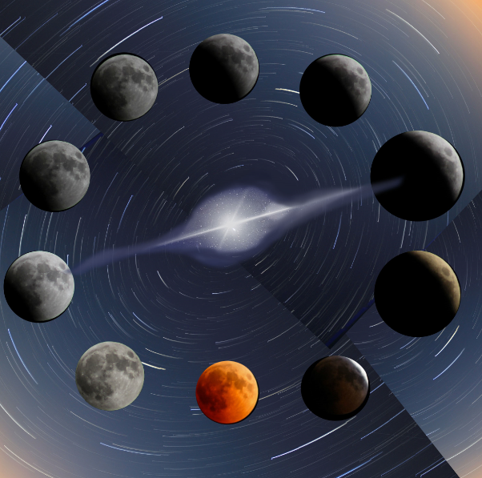
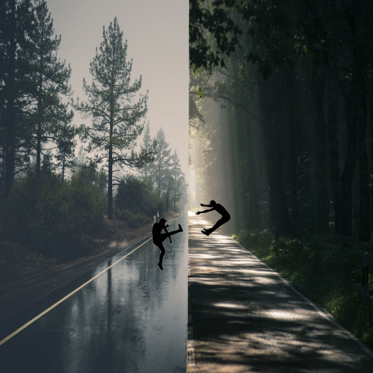
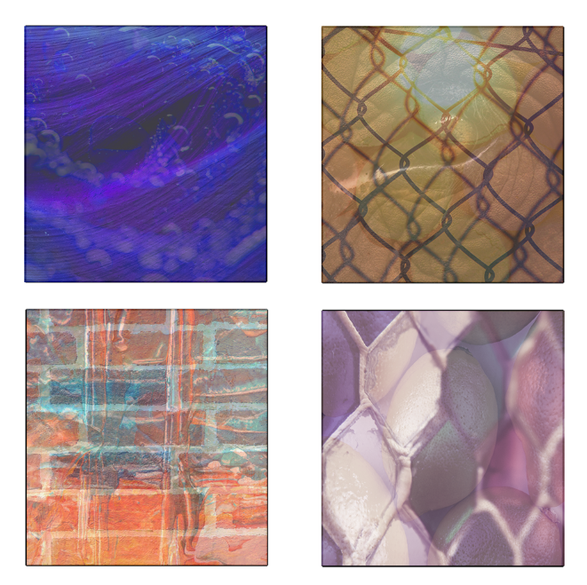

102 Designs
This design is based off of the concept of radial symmetry.I used the different phases of the moon and paired it with the swirled background to create a symmetrical look without re-using the exact same moon image over and over again. Using the star in the middle of the image as a referencce point I create the whole image to revolve around it.
This design is based off the concept of symmetry. Using two differnt images of roads I sliced them in half and lined them up next to each other to appear as though they are heading in the same direction. I added the shadow people fighting as a neat little design element and to create a ripple in time effect.
This design is based off the concept of rhythm. I took four images and overlapped a differnt picture with a lower opacity over each of them so you can see the slight outline of the second image over the other.
